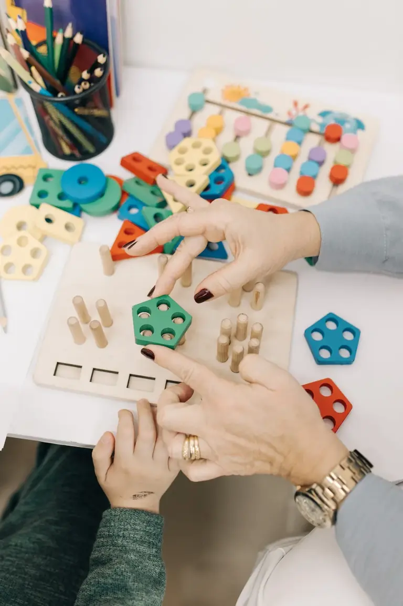
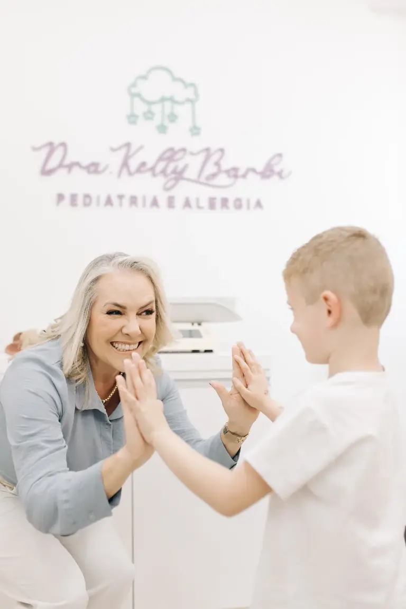
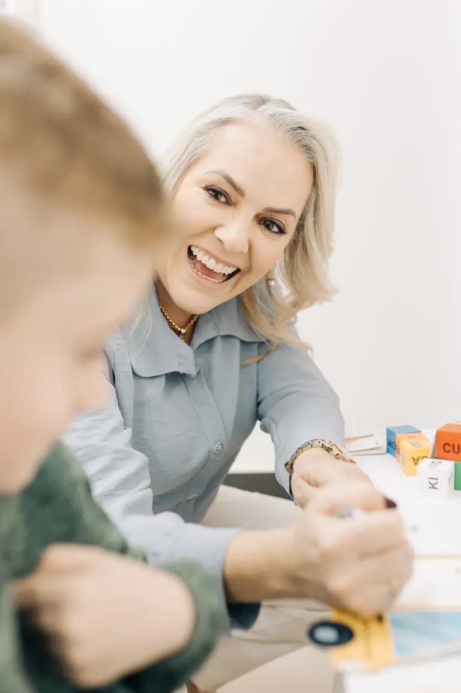
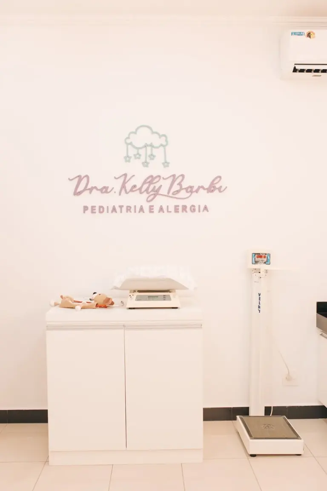

“Sempre atenta, carinhosa, pergunta todos os detalhes e tira todas as dúvidas.”
Pediatria em Mococa
Cuidado atento para cada fase da infância.
Um espaço de escuta, orientação e acompanhamento pediátrico para caminhar junto com sua família — do começo da vida à adolescência.
Jardim Santa Maria · Mococa, SP
Escuta que acolhe.Orientação clara para mães, pais e cuidadores.
Pediatria
Alergologia pediátrica
Desenvolvimento infantil
Acompanhamento próximo

Um cuidado que olha a criança por inteiro
Mais tranquilidade para entender cada etapa.
Na consulta, a família encontra espaço para contar, perguntar e compreender os próximos passos do cuidado, com atenção à história e às necessidades de cada criança.
- ✓Escuta com atençãoUma conversa cuidadosa para compreender dúvidas, rotina e desenvolvimento.
- ✓Acompanhamento ao longo da infânciaOrientação pediátrica desde os primeiros meses até a adolescência.
- ✓Olhar para alergias e desenvolvimentoAtendimento em alergologia pediátrica e atenção ao neurodesenvolvimento, incluindo TEA e TDAH.
- ✓Explicações claras para a famíliaTempo para conversar sobre a avaliação e as possibilidades de acompanhamento.
Atendimento pediátrico
Um acompanhamento construído em parceria com a família.
Cada criança tem seu próprio ritmo e sua história. O atendimento começa com uma conversa aberta e uma avaliação individual, para que responsáveis e profissional possam pensar juntos nos cuidados necessários.
PuericulturaAlergologia infantilNeurodesenvolvimentoTEA e TDAH
Quando indicado, a equipe orienta a família sobre as próximas etapas. Dúvidas sobre indicação ou disponibilidade? Fale diretamente com o consultório.
Conversar sobre o atendimento
Presença, cuidado e orientação
Palavras de quem já esteve por aqui
O acolhimento também se sente.
Alguns relatos compartilhados por famílias no perfil da clínica.
5,0
“Consulta tranquila, ambiente acolhedor onde a criança se sente bem e segura.”
“Nota 10. Explicação clara e objetiva para os pais.”
Conheça a Dra. Kelly
Medicina com espaço para ouvir e orientar.
A Dra. Kelly Barbi dos Santos Araújo atende em Mococa, com atuação em pediatria, alergologia pediátrica e atenção ao desenvolvimento infantil. Seu trabalho é voltado a apoiar crianças e famílias com acompanhamento cuidadoso e comunicação clara.
Acompanhe conteúdos e informações no Instagram @dra.kellybarbi.

Próximo passo
Quer saber sobre disponibilidade de atendimento?
Envie uma mensagem para a equipe pelo WhatsApp. Se desejar, peça para ser considerada na lista de espera; a equipe poderá confirmar disponibilidade e próximos passos.
Solicitar entrada na listaO contato é feito diretamente pelo WhatsApp. Não envie informações médicas ou dados sensíveis da criança por este link.
Onde estamos
Será um prazer conversar com você.
ConsultórioR. Alexandre Cunali, 143
Jardim Santa Maria, Mococa – SP
CEP 13730-270
Jardim Santa Maria, Mococa – SP
CEP 13730-270
Telefone e WhatsApp(19) 98936-2112

Um espaço pensado para acolher.